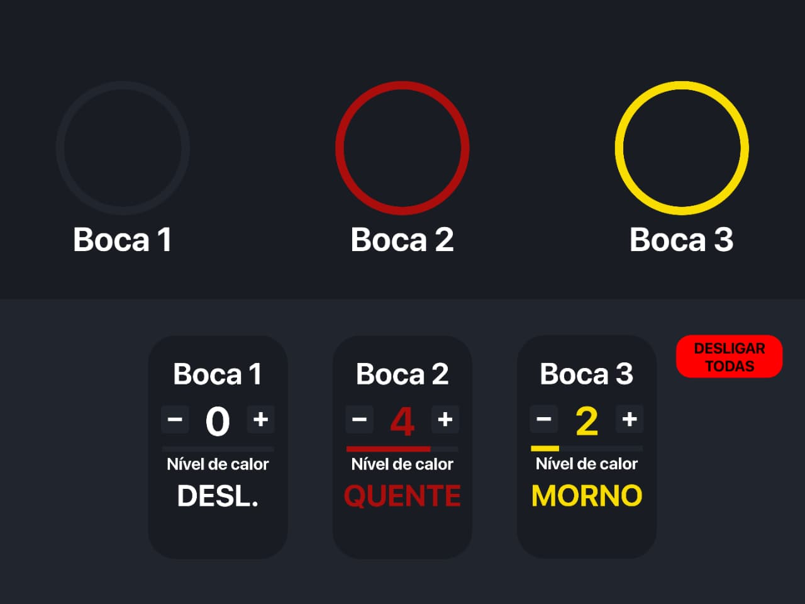

Sobre mim
Olá! Eu sou SEU NOME, [curso, instituição, etc.].
[Fale do seu papel como projetista e da importância de soluções empáticas e acessíveis.]
[Uma frase que resuma sua visão de design, opcional.]
A nova interface

Conceito da interface
A ideia principal da nova interface é deixar o funcionamento do fogão mais fácil de entender e utilizar. Em vez de depender somente de botões tradicionais, a interface utiliza números, símbolos, textos e indicadores para mostrar claramente qual boca está sendo utilizada e qual é o seu estado.
Os controles foram colocados na parte frontal para facilitar o acesso, principalmente para pessoas que utilizam cadeira de rodas ou possuem uma estatura menor. Cada boca possui seu próprio controle, evitando que o usuário precise procurar qual botão corresponde a determinada boca.
A interface também possui um botão grande de desligamento geral. Dessa forma, em uma situação de emergência ou simplesmente quando o usuário quiser desligar tudo, não é necessário procurar cada controle individualmente.
Necessidades atendidas
- Cadeirantes e nanismo: os controles ficam na parte frontal do fogão e podem ser alcançados sem precisar estender o braço até a parte de trás do aparelho.
- Deficiência visual: números, textos e símbolos grandes e com bastante contraste em relação ao fundo, além de marcações em relevo para identificar os controles pelo toque e avisos sonoros ao acionar uma boca.
- Deficiência auditiva: informações importantes não dependem apenas de sons. O estado da boca também é mostrado por luzes, símbolos e textos.
- Daltonismo: as cores não são utilizadas sozinhas para indicar se uma boca está ligada, desligada ou quente. Cada situação também possui um símbolo ou texto correspondente.
- Segurança: existe um indicador específico para mostrar quando uma superfície continua quente mesmo depois que a boca foi desligada, além do botão de desligamento geral.
Princípios de usabilidade aplicados
- Visibilidade do estado do sistema: cada boca mostra claramente seu nível de calor e se está ligada, desligada ou ainda quente.
- Simplicidade: os controles foram reduzidos às funções principais, evitando uma grande quantidade de botões e informações desnecessárias.
- Consistência: todas as bocas possuem o mesmo padrão de controle. O usuário aprende como funciona uma boca e consegue utilizar as outras da mesma forma.
- Prevenção de erros: o indicador de superfície quente ajuda a evitar que o usuário toque em uma boca que ainda está quente. O botão de desligamento geral também facilita uma resposta rápida em situações de risco.
- Reconhecimento em vez de memorização: os comandos são identificados por números, símbolos e textos, fazendo com que o usuário não precise memorizar o que cada botão significa.
- Acessibilidade: as informações importantes são apresentadas de mais de uma maneira, utilizando textos, formas, símbolos e indicadores visuais.
Escolhas de cores, formas, sons, texturas e textos
| Elemento | Escolha |
|---|---|
| Cores | Foram utilizadas cores com bastante contraste para facilitar a visualização dos elementos. As cores servem como um auxílio, mas não são a única forma de identificar uma informação. Por exemplo, uma boca quente também possui o símbolo e o texto "QUENTE". |
| Formas | Os comandos possuem formas simples e bem separadas. Os botões de aumentar e diminuir possuem posições diferentes e os indicadores utilizam símbolos fáceis de reconhecer. |
| Sons | O fogão pode utilizar avisos sonoros para informar algumas ações, como o acionamento de uma boca. Porém, os sons não são a única forma de transmitir informações importantes, para que pessoas com deficiência auditiva também possam utilizar o aparelho. |
| Texturas | Alguns controles podem possuir pequenas marcações ou diferenças de textura para facilitar a identificação pelo toque, principalmente para pessoas com baixa visão ou dificuldade para diferenciar os elementos visualmente. |
Manual de uso
Conhecendo os comandos
- Botão −: diminui o nível de calor da boca selecionada.
- Botão +: aumenta o nível de calor da boca selecionada.
- Número da boca: identifica qual boca está sendo controlada. A boca 1 corresponde ao primeiro queimador, a boca 2 ao segundo e assim por diante.
- Indicador de nível: mostra numericamente o nível de calor selecionado. Quanto maior o número, maior será a temperatura.
- Indicador "LIGADA": mostra que a boca está em funcionamento.
- Indicador "QUENTE": mostra que a superfície ainda está quente e que deve ser evitada, mesmo que a boca já tenha sido desligada.
- Indicador "FRIA": mostra que a superfície já não apresenta calor residual.
- Botão "DESLIGAR TODAS AS BOCAS": desliga todas as bocas ao mesmo tempo. Ele foi colocado em destaque para poder ser encontrado rapidamente em uma situação de emergência.
Como acender uma boca
- Primeiro, coloque a panela ou recipiente sobre a boca que deseja utilizar.
- Identifique no painel o número correspondente à boca escolhida.
- Pressione o botão + da boca selecionada para iniciar o aquecimento.
- Continue pressionando o botão + até chegar ao nível de calor desejado.
- Confira o indicador da boca. Ele deverá mostrar que ela está LIGADA.
- Durante o uso, o nível de calor pode ser aumentado ou diminuído utilizando os botões + e −.
Como ajustar a temperatura
- Observe o número mostrado no controle da boca que está sendo utilizada.
- Pressione + para aumentar o nível de calor.
- Pressione − para diminuir o nível de calor.
- O número no centro do controle será atualizado para mostrar o novo nível selecionado.
- Caso seja necessário diminuir rapidamente o calor, pressione o botão − até chegar ao nível desejado.
Como desligar
- Pressione o botão − da boca utilizada até que o nível chegue a 0.
- Confira se o indicador mostra que a boca está desligada.
- Observe o indicador de calor residual antes de tocar na superfície.
- Se o indicador mostrar QUENTE, não toque na boca até que ela esteja fria.